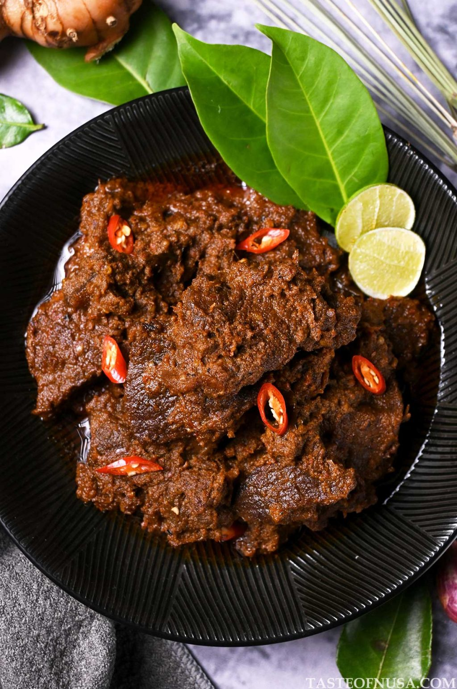
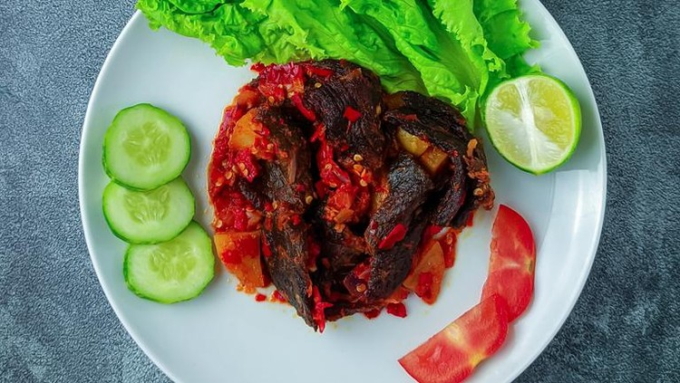
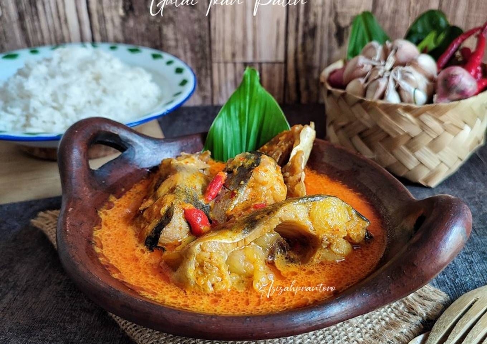
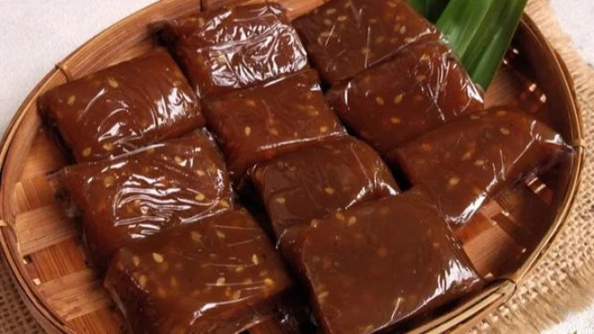

Makanan

Rendang
Daging sapi khas Minang dengan rempah yang kaya dan gurih.

Sate Padang
Sate dengan kuah kental khas Padang yang gurih dan pedas.

Dendeng Batokok
Daging tipis berbumbu yang dikeringkan dan digoreng dengan rasa gurih khas.

Gulai Kambing
Gulai kambing dibuat dari kambing kurban. Dagingnya empuk dengan kuah santan.

Ayam Pop
Ayam yang didihkan memiliki tekstur yang sangat empuk dan warna yang tetap putih pucat.

Nasi Kapau
Nasi putih dengan aneka lauk pauk dan sayuran seperti ayam, tahu, tempe, teri, dendeng, nangka muda dan daun singkong.

Gulai Ikan Patin
Ikan patin segar dimasak dalam kuah santan kental dengan tambahan cabai dan rempah lainnya.

Gulai Tunjang
gulai kaki sapi yang dimasak dengan rempah-rempah dan santan. Perpaduan Kuah gurih dan tekstur daging yang kenyal.

Singgang Kepala Ikan
kepala ikan yang dimasak dengan kuah kari yang pedas. Kepala ikan yang digunakan biasanya ikan tenggiri atau ikan kakap.

Gelamai
ketan yang dikukus lalu dicampur dengan santan kelapa serta kelapa parut.

Lapek Bugih
kue tradisional yang terbuat dari beras ketan dan gula merah. Kue ini memiliki tekstur yang lembut dan rasa manis yang pas.

Bubur Kampiun
memadukan berbagai jenis bubur tradisional—seperti bubur sumsum, ketan hitam, candil, dan kolak—ke dalam satu porsi